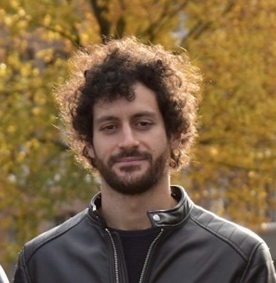
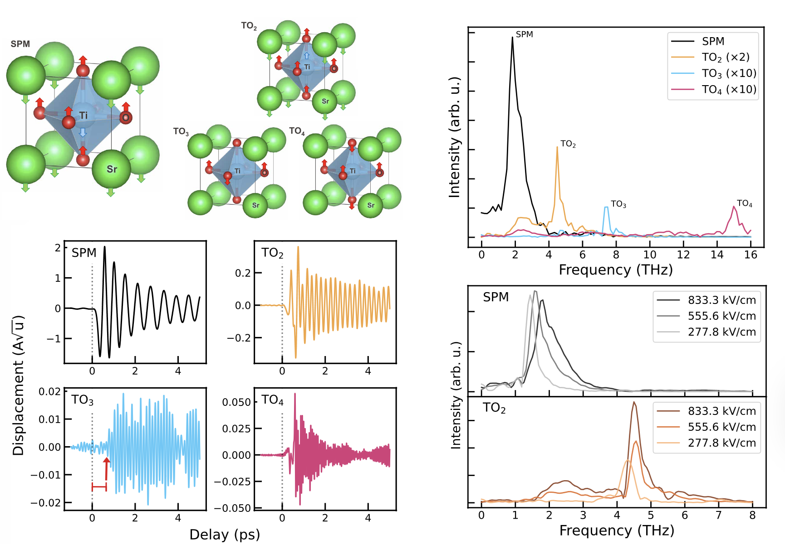
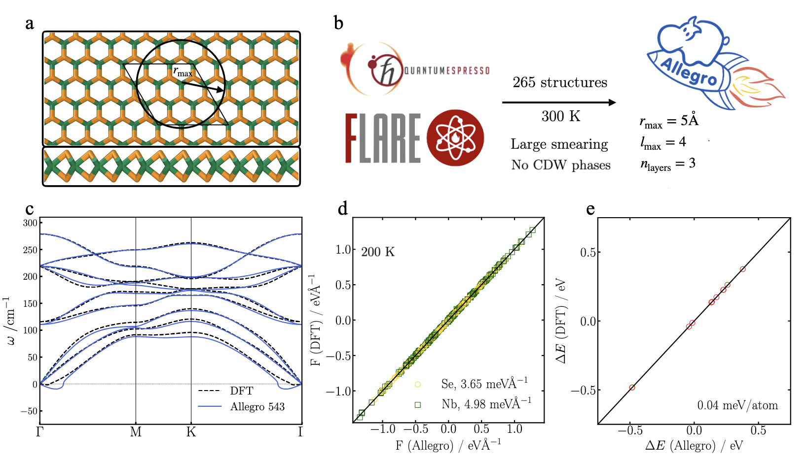
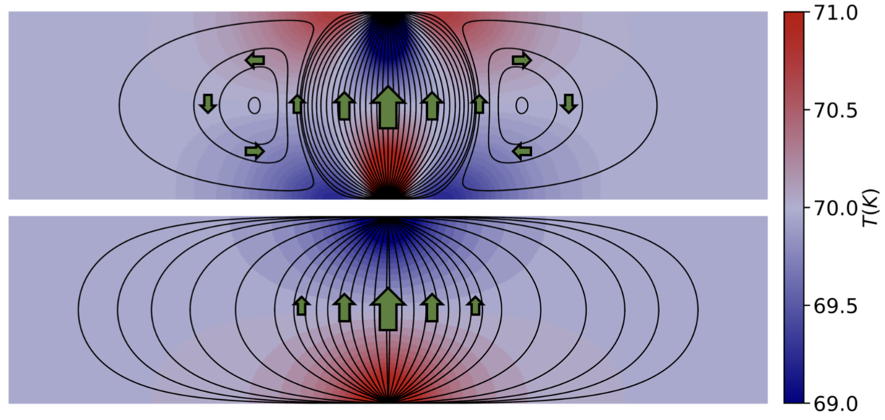
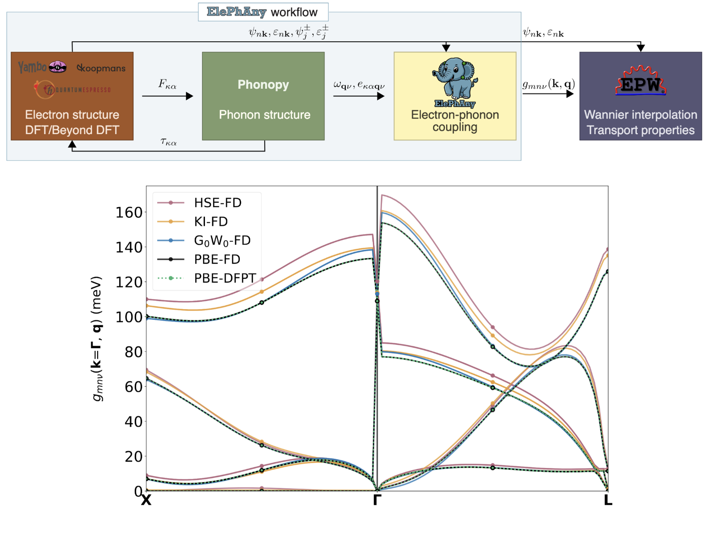
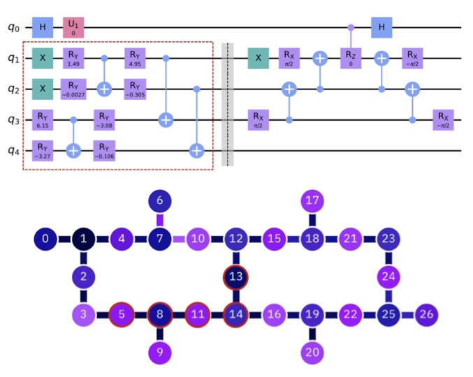
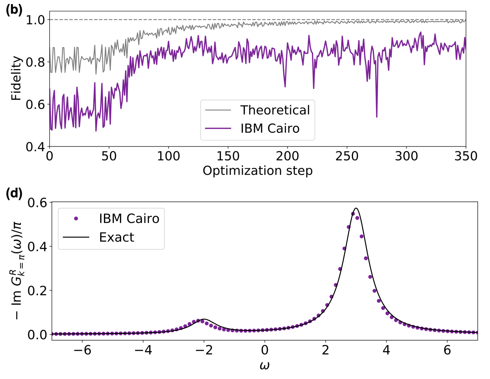
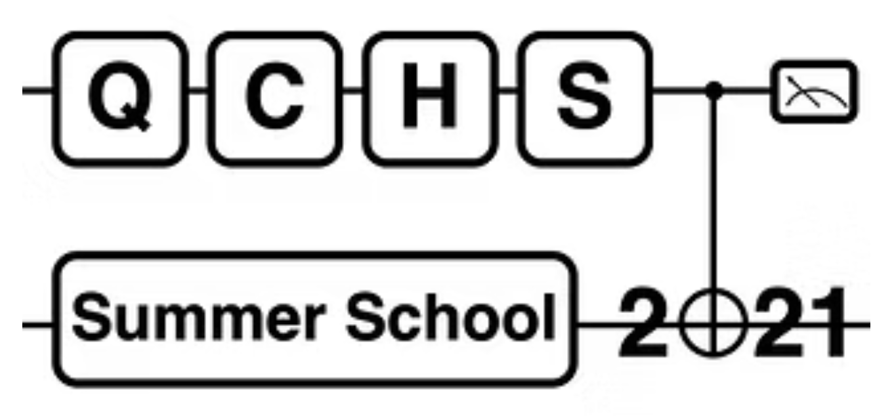

Francesco Libbi
I am a postdoctoral researcher in quantum physics in the Materials Intelligence Research lab at Harvard University. My research here focused on developing stochastic methods and novel integration schemes for solving integro-differential equations governing the quantum dynamics of solids. I am currently applying and fine-tuning graph neural network–based foundation models to significantly speed up the dynamics simulations.
I received my PhD at EPFL, where I applied density functional theory and many-body methods to study the optical, electronic, and transport properties of crystals. I additionally contributed to developing algorithms for quantum chemistry on superconducting quantum computers at IBM Research in Zurich.
G. Scholar LinkedIn Github
francesco dot libbi93 at gmail dot com

Machine Learning & Molecular Dynamics

Nonequilibrium Quantum Dynamics in SrTiO3 under Impulsive THz Radiation with Machine Learning
Francesco Libbi, Anders Johansson, Boris Kozinsky, Lorenzo Monacelli
Science Advances 11, eadw1634, 2025
I formulated a new theoretical framework for quantum molecular dynamics, integrating machine learning to model nonlinear responses in complex systems such as SrTiO₃. The formalism is implemented in an open-source Julia codebase optimized for MPI execution.
PDF •
Code
Quantum Cooling Below Absolute Zero
Francesco Libbi, Lorenzo Monacelli, Boris Kozinsky
ArXiv 2505.22791, 2025
I developed a formalism to model the time evolution of nuclear covariance matrices, showing that strong laser excitation of SrTiO₃ induces a sharp variance collapse that drives a structural phase transition. The formalism is implemented in an open-source Python codebase accelerated with PyTorch.
PDF •
Code

Atomistic Simulations of Out-of-Equilibrium Quantum Nuclear Dynamics
Francesco Libbi, Anders Johansson, Lorenzo Monacelli, Boris Kozinsky
npj Computational Materials 11, 102, 2025
I addressed the challenging problem of solving Newton’s equations when forces are defined as high-dimensional integrals over internal variables. I developed a stochastic technique to evaluate these forces that conserves total energy regardless of the number of stochastic samples, and designed an integration scheme with O(Δt³) local error while minimizing the number of force evaluations.
PDF •
Code

Exploring Charge Density Waves in Two-Dimensional NbSe2 with Machine Learning
Norma Rivano, Francesco Libbi, Chuin Wei Tan, Christopher Cheung, Jose Lado, Arash Mostofi, Philip Kim, Johannes Lischner,
Adolfo O. Fumega, Boris Kozinsky, Zachary A. H. Goodwin
arXiv 2504.13675, 2024
An equivariant graph neural network is employed to learn the mechanical properties of NbSe₂, and is used to investigate the structural transformations that occur as the temperature is lowered down to absolute zero.
PDF
Optical, Electronic & Thermal Properties
Phonon-Assisted Luminescence in Defect Centers from Many-Body Perturbation Theory
Francesco Libbi, Pedro Miguel M. C. de Melo, Zeila Zanolli, Matthieu Verstraete, Nicola Marzari
Physical Review Letters 128, 167401, 2022
I employ an advanced perturbative formalism to solve many-operator partial differential equations and compute the optical properties of defects in two-dimensional materials, revealing promising applications in sensing.
PDF

Thermomechanical Properties of Honeycomb Lattices from Internal-Coordinates Potentials: the Case of Graphene and Hexagonal Boron Nitride
Francesco Libbi, Nicola Bonini, Nicola Marzari
2D Materials, 8 015026 2020
I developed and implemented a force field to model the energy of graphene and carbon nanotubes, optimizing its parameters by minimizing the energy error through a MSE loss function. The resulting force field accurately reproduces both the mechanical and thermal properties.
PDF •
Data

Bending Rigidity, Sound Propagation and Ripples in Flat Graphene
Unai Aseginolaza, Josu Diego, Tommaso Cea, Raffaello Bianco, Lorenzo Monacelli, Francesco Libbi, Matteo Calandra,
Aitor Bergara, Francesco Mauri, Ion Errea
Nature Physics volume 20, pages 1288–1293, 2024
In this work, I show that the exact symmetry constraints of graphene lead to a q⁴. dependence of the correlation function of its flexural mode. This result confirms that the mechanical behavior of graphene can be accurately described within the framework of membrane theory.
PDF

Vortices and Backflow in Hydrodynamic Heat Transport
Enrico Di Lucente, Francesco Libbi, Nicola Marzari
arXiv 2501.16580, 2024
This work shows that, at the nanoscale, heat conduction obeys differential equations that share formal analogies with the Navier–Stokes equations, leading to the emergence of heat-vortex phenomena.
PDF

Carrier Mobilities and Electron-Phonon Interactions Beyond DFT
Aleksandr Poliukhin, Nicola Colonna, Francesco Libbi, Samuel Poncé, Nicola Marzari
arXiv 2508.14852 2024
A new code is developed to compute the electron–phonon interaction using a general finite-difference approach applicable to any material. The method, grounded in the perturbation theory of generalized eigenvalue problems, is compatible with both semilocal and fully nonlocal exchange–correlation functionals.
PDF •
Code •
Data
Quantum Computing

Effective Calculation of the Green's Function in the Time Domain on Near-Term Quantum Processors
Francesco Libbi, Jacopo Rizzo, Francesco Tacchino, Nicola Marzari, Ivano Tavernelli
Physical Review Research 4, 043038, 2022
I design a novel variational algorithm to solve quantum chemistry problems on current quantum computers. The algorithm minimizes the number of CNOT gates, the dominant source of noise, yielding results in excellent agreement with exact solutions.
★ Internship in IBM Quantum, Zurich ★
PDF

One-particle Green's Functions from the Quantum Equation of Motion Algorithm
Jacopo Rizzo, Francesco Libbi, Francesco Tacchino, Ivano Tavernelli, Nicola Marzari
Physical Review Research 4, 043011, 2018
An alternative approach to solving quantum chemistry problems on current quantum computers is proposed, based on the quantum equation-of-motion (qEOM) algorithm.
★ Internship in IBM Quantum, Zurich ★
PDF

Quantum Computing Hard- and Software School 2021
Francesco Libbi, Uwe Von Lüpke, Maxwell Drimmer, Bruno Schmitt
I co-led the organization of the 1st edition of the Quantum Computing Hard- and Software School (QCHS). Secured $20,000 in funding from grants and sponsors, attracting 600+ applications from researchers worldwide and 8,000+ views on YouTube.
Primary co-organizer, 600+ applications
★ 8000+ Viewes on YouTube ★
YouTube
2018
Winner of the EPFLInnovators fellowship.Awarded $100,000 by the European Union Horizon’s 2020 to conduct cutting-edge scientific research.
2023
Winner of the SNSF Postdoc Mobility Fellowship.Awarded $140,000 by the Swiss National Science Foundation (SNSF) to support advanced postdoctoral research abroad. Funding covered independent theoretical research, international collaboration, and career development in science.
2025
Psi-K Conference, Lausanne2024
American Physical Society (APS) March Meeting, Minneapolis2023
American Physical Society (APS) March Meeting, Las Vegas2022
Psi-K Conference, Lausanne2021
NanoQI Conference, Bilbao